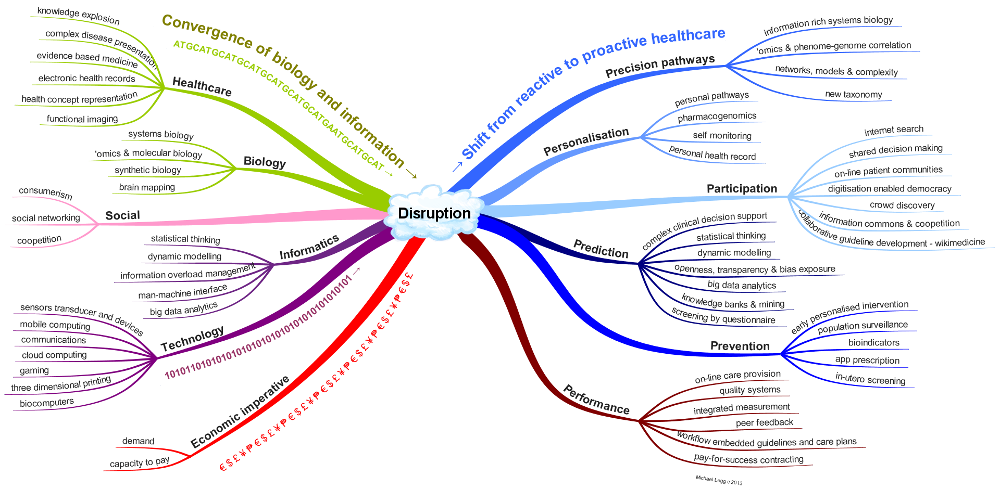

Current Build

 Foundation
FoundationFHIR Infrastructure  Work Group Work Group | Maturity Level: N/A | Ballot Status: STU 3 |
FHIR offers more than a standard solving existing problems in interoperability, it provides a platform for
the future. Interoperability is "all about the people"; to get past the peak of inflated expectations
to the plateau of productivity on the hype cycle it
is imperative that there is a shared vision of what is trying to be achieved. Healthcare is in the midst
of a transformation driven by the convergence of biological and information revolutions and by economic
imperative and social change.. FHIR's strength lies in it being grounded in the real world which is
changing rapidly. This appendix offers a high-level view of the disruption underway and helps place
FHIR into a wider context.
Just as John Snow used a branch of informatics and geospatial analysis to identify the source of cholera in London and so prove the germ theory and revolutionize medicine in 1854, so too will the application of informatics and associated technology be instrumental in the next big change in healthcare.
In countries with advanced economies, health systems are facing increased demand from aging populations and increased incidence of chronic disease. In many of these countries, there is also a shortage of skilled workers. Mounting evidence points to avoidable errors causing serious harm to patients. Indeed optimal care only occurs about half the time in even the best performing health systems (1). Small incremental improvements will not be enough to address the looming crisis in sustainable healthcare.
Convergence of trends in health care, biology, informatics and technology together with the associated social changes and economic imperative is driving a paradigm shift (2) that may be the answer. Informatics has a role in most aspects of this. The figure below provides a summary of the convergence of these trends and the likely results of disruption that will move us from reactive to proactive healthcare.
In terms of our understanding of physiological pathways, informatics is now the major tool of molecular biology. For example, the time spent computing exceeds chemical analysis for gene sequencing by 3 to 1. Informatics is being used to map neural networks and to build the models of systems biology (3) with ever increasing levels of precision and complexity that can't be done without the help of machines. Our understanding has changed so much in recent times that the American Academy of Science is now arguing that it is time for a new taxonomy (4).
Personalization is occurring both because of social change and increased biological knowledge and is being facilitated by cheap mobile computing, sensors and devices. These social forces and the enabling technologies are allowing greater participation by 'non-experts' in decision making, treatment, discovery and knowledge management.
Greater knowledge about how we think (5), advances in the information sciences and the increased availability of computing power means that our capacity to acquire knowledge and use it to predict the course of pathology has increased enormously, and that is fortuitous, because the explosion of information is impossible to deal with otherwise. These new capabilities can be used to provide better advice and to better prevent disease through discovery, monitoring and treatment.
The health system itself can also benefit from what looks like a second phase of utilization of information technology through on-line care provision, real integrated measurement of quality and integration of knowledge in work-flow. With openness and transparency there is also the prospect of co-opetition (cooperative competition) and with integrated outcome measures that pay-for-success contracting can be used as an economic lever.
Large scale change in the way healthcare is done is both essential and inevitable. It is likely that this will derive from the merging of the knowledge and machines of the biological and information revolutions facilitating a shift from reactive treatment to proactive personalized medicine. Only by such significant changes could the needed quantum improvement in the effectiveness and efficiency of healthcare be made.
The development of digital technology has disrupted other sectors, notably media, retail and manufacturing, and the health sector is unlikely to remain immune (6). Digitization of biology and health will allow machines to help, lead to a demystification of disease, the democratization of healthcare, and a move from the treatment of disease to the promotion and maintenance of wellness.
References
This page maintained by Michael Legg
© HL7.org 2011+. FHIR STU3 Candidate (v1.7.0-10082) generated on Thu, Oct 27, 2016 16:28+0000. QA Page
Links: Search |
Version History |
Table of Contents |
Compare to DSTU2 |
 |
Propose a change
|
Propose a change